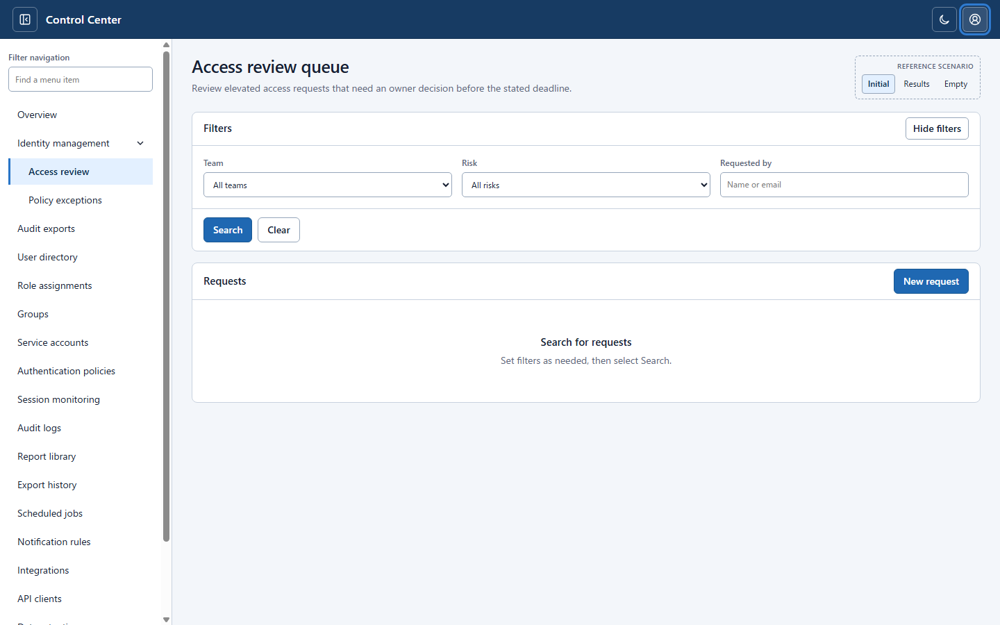

The header user control reveals a small popover with sample identity and a sign-out action.
MENU-002 / Header user menu / research example
A user control in the application header opens a small account popover. Escape closes the popover and returns focus to the originating control. This design responsibility is different from the left navigation tree.
Two independent 1440 × 900 source screenshots
The header user control reveals a small popover with sample identity and a sign-out action.

After Escape, the popover is gone and the keyboard focus indicator is visible on the invoking header button.
The source captures are from PoC 017 and its historical browser evidence. A CSS-only crop displays the top-right region without changing the independent image files; links below each tile open the full screenshot.
These are bounded observed states, not proof of real authentication, successful sign-out, assistive technology support or deployment readiness. No new design approval is implied.